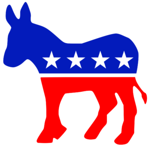
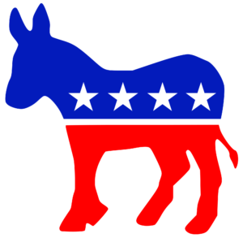

Хто я такий?
Всім привіт, мене звати Лебеденко Кирил, я учень 11-А класу й виконую роль старости.


Вчуся одночасно у двох школах в Міжнародній Українській Школі і в Авіакосмічний Ліцей Національного Авіаційного Університету.
Дуже добре розуміюся в математиці, позаяк вчуся у фізико-математичному ліцеї.
 

Я розбираюся у програмуванні, тому минулого року я зайняв 3 місце в олімпіаді по програмуванню, цікавлюсь дизайном, політикою та історією.
Також я є власником української спільноти по грі: «Garry’s Mod» — яку назвав: «Простір Sandbox» — а також сформував власну невеличку команду із кодерів під назвою — «Prostir Team».
Мої бачення міжнародної школи!
Я хочу вам розповісти про своє бачення того, як має виглядати ідеальна міжнародна школа.
Навчальний заклад насамперед має працювати й дружити з сучасними цифровими пристроями. Кожен учень має бути зацікавлений, як і де він навчається.
Де вчитель є другом, а не ворогом, де школа виглядає приємно, щоб не хотілось покидати її. Де парламент контактує з учнями й реально вирішує проблеми.
Де робота для кожного учасника парламенту розділена розумно та правильно.